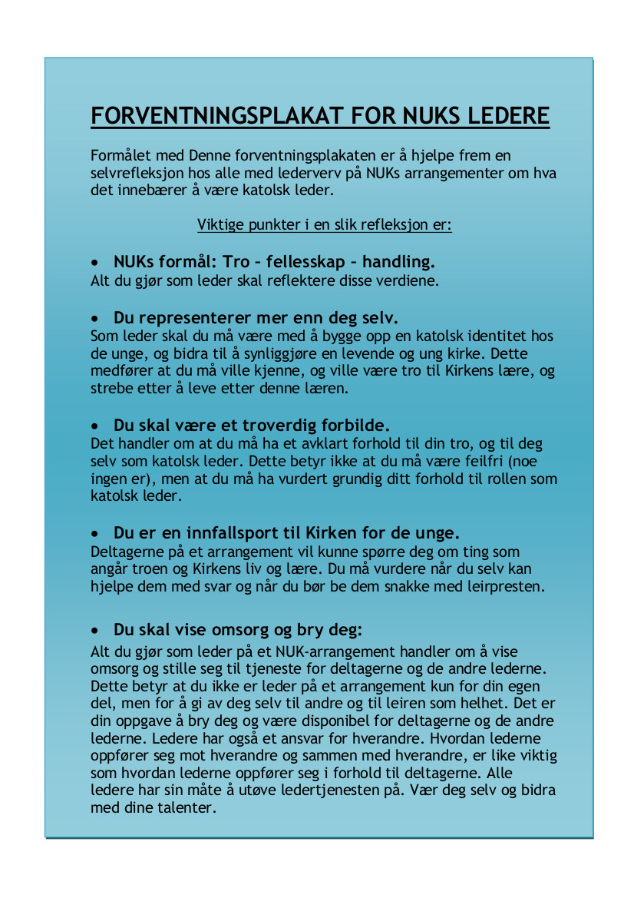

Håndbøker for lokallag
Å drive barne- og ungdomsarbeid kan være en utfordring av mange ulike grunner. Disse håndbøkene er ment som en ressurs der dere kan finne tips og informasjon til hvordan drive katolsk barne- og ungdomsarbeid, og hvordan være et fungerende lokallag i NUK. Enten dere vil starte et nytt lokallag, få ny inspirasjon til fungerende aktiviteter, holde orden på økonomien eller høre på motiverende erfaringer fra andre lokallag så finner du det her.
Lokallagshåndbok
Utdrag av innholdsfortegnelsen
- Del 1: Introduksjon
- Om lokallag i NUK
- Del 2: Få i gang aktivitet
- Konkrete forslag til aktiviteter
- Hvordan arrangere en helg
- Barnelag
- Ministrantlag o.l.
- Ungdom og konfirmanter
- Studentlag / 18 +
- Et vellykket AA-prosjekt
- ...
- Del 3: Hvordan drive et lokallag
- Forventinger til et NUK-lokallag
- Roller og oppgaver i et lokallag
- ...
Forventningsplakat for ledere
Er du eller skal du bli leder? Lurer du på hva det innebærer å være en katolsk leder? Bruk forventningsplakaten som hjelp til å få frem en selvrefleksjon om hva det innebærer å være en katolsk leder.
Klikk her for å laste ned forventningsplakaten.Ministranthåndbok
Tips til deg som vil starte ministrantlag.
Innhold
- Velkommen som ministrant
- Praktiske råd for ministranter
- Forberedelse til messen
- Messens gang
- Ord og uttrykk som brukes i kirken
- Kirkeåret
- Tips til deg som vil starte ministrantlag